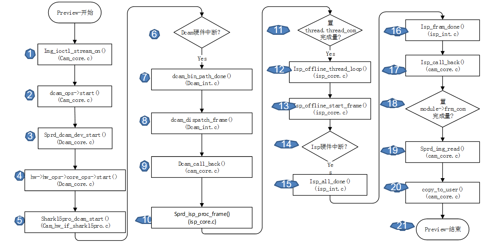

DCAM:
(1)红色箭头表示Capture的数据流；–full path
(2)绿色箭头表示Preview/Video的数据流；–bin path
在ISP模块：
(1)Capture和Preview共用一条数据通路，如图紫色箭头；–scl_pre_cap
(2)Video的数据流如图蓝色箭头;–scl_vid
Preview大概流程如下：
1.数据获取：走online，由sensor传来图像数据；
2.DCAM模块：获得图像数据后，Preview/Video走Bin_path(DCAM模块绿色箭头的通路)，Capture走full_path(DCAM模块红色箭头的通路)，DCAM模块处理完图像以后，将处理好的图像数据写进DDR中；
3.ISP模块：ISP模块启动后，从DDR中拿到DCAM处理的图像数据，作进一步处理；在ISP模块，Capture/Preview走同一条通路，如图ISP模块紫色箭头；Video单独走一条通路，如图ISP模块蓝色箭头；同样，ISP处理完后，会将数据写进DDR；
4.在cam_core.c文件中，通过与User层交互，将处理好的图像上传给User层。
Camera_Preview代码走读流程图

Camera_Preview代码走读注意事项：
1.User层与Driver层的交互：主要集中在Cam_core.c中，包括参数的传输，启动相应模块等，主要是通过ioctl函数传输，如图中的标号①，是preview流程中user向kernel传输参数和命令操作的最后一个ioctl函数。
2.Dcam模块处理；如图中的标号② 到⑧，对应的函数是在进行对应的参数的配置和dcam硬件的启动；真正启动dcam的操作在是在标号5对应的函数中，cam_hw_if_xxxx.c文件中的xxx.dcam_start()函数中，xxx表示不同的手机版本；如sharkl5pro、sharkl3等，最后配置有关寄存器启动dcam，前面都是在做一些参数的传输、配置、相关线程的启动等；dcam处理完图像,出一个硬件中断，然后走bin_path_done;如图标号⑥到⑧。
3.在dcam处理完以后，会启动isp继续处理图像，这个过程如图中标号⑨到⑾，dcam处理完，返回cam_core.c去启动isp；注意，isp_offline_thread_loop()在①对应的传参初始化过程中就启动Isp_offline_thread_loop()时，走到该函数中循环等待thread.thread_com完成量。
4.isp模块的处理： 如图标号⑿到⒃是启动isp硬件处理图像，流程同dcam；
5.同样，isp处理完后会返回cam_core.c,然后从cam_core.c中将处理完的图像传到user层；如图标号⒄到⒇；